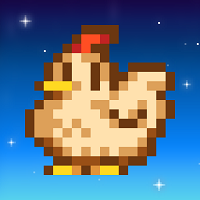
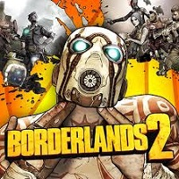
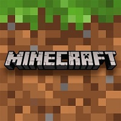
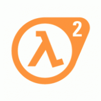

Stardew Valley
Stardew Valley — компьютерная игра в жанре симулятора жизни фермера с элементами ролевой игры, разработанная игровым дизайнером Эриком Бароном и изданная Chucklefish Games для Microsoft Windows в 2016 году. Позже игра была портирована на платформы macOS, Linux, PlayStation 4, Xbox One, Nintendo Switch, iOS и Android.
Borderlands 2
Borderlands 2 — компьютерная игра в жанре шутера от первого лица с элементами RPG, продолжение компьютерной игры Borderlands (2009). Отличается от своей предшественницы улучшенной системой модинга оружия и более продуманным сюжетом.
Minecraft
Minecraft — компьютерная инди-игра в жанре песочницы, созданная шведским программистом Маркусом Перссоном и выпущенная его компанией Mojang AB.
Half-Life 2
Half-Life 2 — компьютерная игра, научно-фантастический шутер от первого лица, сиквел Half-Life, разработанный компанией Valve, издаваемый ими же и Sierra Entertainment. Игра была выпущена в 2004 году. В 2012 году Half-Life 2 была награждена на Spike VGA 10 (Spike Video Game Awards) как лучшая игра десятилетия.